ChatGPT 써봤는데 결과물이 별로였던 경험, 있으시죠?
프롬프트를 잘 못 써서가 아닙니다.
맥락 전체를 안 줘서입니다.
Antigravity 안 받으신 분, 지금 다운 시작하세요 (교육 듣는 동안 설치됩니다)
강의자료: claude-remote-control-guide-nine.vercel.app
빅테크는 이미 바뀌었다
근데 나는 왜 안 되지?
안 되는 3가지 이유
자료 / 습관 / 세팅으로 해결
Antigravity로 만들고 배포
규칙 유무에 따른 차이 체감
2025~2026, 모든 빅테크가 "자율 실행"으로 전환 중.
"부산 여행 짜줘" 한 마디에
기차표 검색 → 호텔 비교 → 예약 → 결제
사람이 중간에 할 일 = 0
"가성비 헤드폰 찾아줘" 한 마디에
검색 → 비교 → 결제까지 한번에
코드~배포도 자율 실행 (오늘 실습 도구)
"엑셀 열어서 차트 만들고 메일 보내"
폰에서 시키면 PC가 직접 실행
GitHub 전체 커밋의 4%가 AI
OpenAI + Google + MS + Linux Foundation
에이전트 통신 표준 합의
에이전트끼리 협업하는 시대
"큰 바디로션 추천해줘"
구매이력 분석 → 추천 → 결제까지
검색이 아니라 행동. 전 서비스 탑재.
카톡에서 "생일파티 어디서 하지?"
대화 맥락 읽고 → 장소 추천 → 카카오페이 결제
카톡 안에서 다 끝남.
슬랙 "VPN 안 돼" → 기기 조회 → 스스로 해결
여행 계획 → 날씨/항공/호텔 에이전트 팀 협업
말 한마디면
AI가 결과까지
앱 여러 개 열고 누르던 시대는 끝났다
컨텍스트 윈도우 = AI가 한번에 읽을 수 있는 양
| 회사 | 2025.06 | 2025.12 | 2026.03 | 증가 |
|---|---|---|---|---|
| OpenAI | 128K | 400K | 1.05M | 8x |
| Anthropic | 200K | 200K | 1M 베타 | ~5x |
| 1M | 1M | 2M | 2x | |
| Meta | 128K | 128K | 10M | 78x |
3번 나눠서
시키기
기준서 1장으로
가능해짐
리서치+설계+구현
전부 한 세션
나눠서 시킬 필요가 없어졌다 → 규칙만 주면 된다
검색해서 비교해서 결제까지? 말은 좋은데.
내가 직접 해보면 원하는 대로 정확히 안 됩니다.
"부산 여행 짜줘" → 폐업한 식당 추천
"보고서 써줘" → 어제 고친 실수 오늘 또 반복
"가격 비교해줘" → 숫자가 미묘하게 다름
"이메일 보내줘" → 받는 사람 이름 틀림
잘못된 자율 실행은
안 되는 것보다 더 위험
틀린 금액으로 결제, 잘못된 정보로 보고서 제출
왜 안 되는 걸까?
프롬프트만 줬거나, 기준 없이 시켰거나, 한번에 다 시켰거나
물어봐야 답함
매 단계마다 지시 필요
결과물 = 텍스트 답변
프롬프트로 매번 시키기
목표 주면 끝까지 자율 실행
중간 개입 없이 완료
결과물 = 파일 / 사이트 / 앱
사전에 규칙/자료로 세팅
에이전트는 강력하다. 하지만 "그냥 시키면" 안 된다
이 3단계가 없으면 "해봤는데 안 돼"가 반복됩니다
프롬프트를 아무리 구체적으로 써봐도 결과가 비슷한 이유가 있습니다.
"우리 카페 블로그 글 써줘"
"저희 카페는 최상의 원두를 엄선하여 고객 여러분께 최고의 커피 경험을 제공합니다. 따뜻한 분위기 속에서 특별한 하루를 시작해보세요."
어디서 본 듯한 뻔한 글
재료도, 기준도 없이 말만 함 = 레시피 없이 "맛있게 해줘"
"잘"이 뭔지 기준을 안 줌 = 골대 없이 골 넣으라는 것
"블로그 10개 써줘" 한 방에 = 주문서 하나에 10가지 요리
프롬프트는 맥락의 일부일 뿐이다
재료(사진, 문서, 데이터)와 규칙(기준서, 단계별 지시)을 같이 줘야 한다
3단계 모두, 내가 하는 건 "말하기"와 "확인"뿐입니다. 나머지는 AI가 합니다.
원인: 프롬프트만 줬다 → 재료도 기준도 없었다
해결: 규칙 파일을 프로젝트에 넣어둔다. AI한테 시키면 됨
원인: 기준 없이, 한번에 다 시켰다
해결: "좋은 X의 기준 먼저 정리해줘" → 확인 → "이 기준으로 만들어줘"
원인: 결과물을 그대로 가져다 썼다
해결: "방금 만든 거 기준으로 검토해봐. 뭐가 빠졌는지 알려줘"
세팅하고, 제대로 지시하고, 확인한다
이론은 여기까지. 이제 실제 사례를 봅니다
에이전트가 아닙니다. AI 도구에 좋은 재료를 넣으면 채팅창 밖의 결과물이 나옵니다.
참고할 페이지를 재료로 줌 → 실제 배포 가능한 랜딩페이지 완성
AI한테 구현 플랜을 먼저 요청 → 그 자료를 다시 줘서 결제 기능 구현
사진 + 정보 + 디자인 레퍼런스 → 실제 보낸 모바일 청첩장
좋은 재료를 줬더니 채팅창 밖의 진짜 결과물이 나옴
규칙이 쌓일수록 사람 개입이 줄어듭니다. 처음부터 완벽하진 않지만, 반복할수록 좋아집니다.
긱뉴스 크롤링 → GPT 분석 → 리포트 자동 생성
규칙 파일(.cursorrules)로 에이전트 행동 범위 제어
이 강의 자체가 에이전트로 만든 사례
폰에서 시키면 PC가 자율 실행
3단계 모두, 내가 하는 건 "말하기"와 "확인"뿐입니다.
Antigravity한테 시킨다: "나는 카페를 운영해. 작업용 규칙 파일 만들어줘"
AI가 검증된 규칙 검색 → 내 상황에 정리 → 생성. 쓰면서 "이건 하지 마" 추가하면 점점 완성
[before] "블로그 글 써줘" → 뻔한 글
[after] "기준 10가지 먼저" → 확인 → "이 기준으로 써줘"
[before] "사업계획서 만들어줘" → 뭉뚱그림
[after] "목차만 먼저" → 확인 → "1장 써줘" → 확인
"방금 만든 거 기준으로 검토해봐. 몇 점인지, 뭐가 빠졌는지."
만든 놈이 검토도 하는 게 핵심. 한번 더 거르는 것만으로 품질 UP
| 단계 | 원인 (왜 별로였나) | 해결 | 내가 하는 말 |
|---|---|---|---|
| 세팅 | 프롬프트만 줬다 | 규칙 파일 만들기 | "내 상황에 맞는 규칙 만들어줘" |
| 지시 | 기준 없이, 한번에 | 기준 먼저 + 단계별 | "기준 만들어줘" → 확인 → "다음" |
| 확인 | 검토 안 했다 | AI 자체 검토 | "방금 만든 거 기준으로 검토해봐" |
3단계 모두, 내가 하는 건 "말하기"와 "확인"뿐이다
찾기, 정리, 만들기, 검토는 AI가 한다
기준문서_대출계산기.md → 계산 공식·디자인·UX 기준 포함
기준문서_견적서생성기.md → 비즈니스 로직·레이아웃·기술스택 기준 포함
2차 실습에서 이 파일 중 하나를 Antigravity에 첨부하면 됩니다.
배포된 질문지를 기반으로 자기 주제 1가지를 정합니다. 못 정하면 공통 주제로.
누구나 쓸 수 있는 실용 도구. 만든 후 실제로 쓸 수 있음.
프리랜서/자영업자용. 항목 입력하면 견적서 생성.
자기 주제 있는 분은 자유롭게 진행
3번 나눠서 시킴
1번에 끝
128K → 1M+
웹 검색, 파일 생성
테스트까지 자율
나눠서 시키기 →
규칙 주고 맡기기
오늘 실습 = "기준서 1장으로 앱 완성"
코딩 몰라도 됩니다. 이 3가지가 알아서 해줍니다.
Google이 만든 무료 에이전트 IDE.
구글 계정만 있으면 바로 사용.
채팅으로 시키면 코드 생성 → 미리보기 → 배포까지 자율 실행.
코딩 지식 필요 없음. 말로 시키면 됨.
만든 웹사이트를 인터넷에 올려주는 서비스.
구글 계정으로 가입, 무료.
Antigravity가 만든 결과물을 Vercel이 세상에 공개.
내 결과물에 URL이 생기고, 누구나 접속 가능.
배포 과정을 자동화한 명령어.
원래: 빌드 → 설정 → 확인 → 배포 (4단계)
turbo-all: 한 번에 끝. 중간 확인 0.
이것이 에이전트식 제어 = 사전에 규칙 세팅.
Antigravity (만든다) → /turbo-all (자동 배포) → Vercel (세상에 공개)
코드 생성부터 배포까지 사람이 손 안 대도 끝남 = 에이전트
말로 시키면 만들고, 명령어 하나로 배포하고, URL로 공유한다.
화면 보며 따라오세요. 3단계면 끝.
오프닝에서 다운로드 시작했으면 이미 설치 완료. 아직이면 지금 바로.
vercel.com → Continue with Google → 구글 계정 선택 → 끝.
아래 버튼을 눌러 기준 문서를 다운로드하세요.
npx vercel --yes --prod
→
모든 질문 자동 응답
→
빌드
→
배포
→
URL 반환
원래 4단계를 거쳐야 하는 배포를 명령어 하나로 자동화.
사전에 규칙(--yes --prod)을 세팅해서 에이전트가 안전하게 자율 실행하도록 만든 것.
이것이 에이전트입니다. 규칙 파일 유무에 따른 결과 차이를 직접 체험합니다.
"대출이자 계산기 만들어줘"같은 주제를 2번 돌리고, 차이를 직접 체감합니다.
"대출이자 계산기 만들어줘" → /turbo-all → URL 메모 → 아쉬운 점 체크
기준문서_대출계산기.md 첨부 + 같은 명령 → /turbo-all → 1차 URL과 나란히 비교
1차 vs 2차, 뭐가 달랐나요?
만든 결과물의 Vercel URL을 채팅에 공유해 주세요.
규칙 파일 넣기 전/후에 어떤 차이가 있었나요?
"맥락을 주니까 확실히 달랐다" 같은 한 줄 소감.
특정 폴더 안에서만 수정 허용. 다른 곳은 못 건드리게.
하면 안 되는 것 명시. 삭제 금지, 행동 범위 설정.
중요 작업은 실행 전 확인 단계 삽입.
절대 코드에 직접 넣지 않기. 환경변수 관리.
오늘 정한 "내가 만들 것"을 Antigravity로 본격 구현합니다.
오늘 배운 규칙 파일 + 질문지를 가지고 오세요.
재료와 규칙을 줘라. 제어를 잊지 마라.
코딩 몰라도 됩니다.
내 문제를 아는 사람이 이깁니다.
코드를 직접 짜는 게 아니라, 설명하면 AI가 만들어줍니다.
Claude를 만든 Anthropic이 개최. 13,000명 지원, 500명 선발. 평가 기준: 기술 혁신성, 작동하는 프로토타입, 실제 문제 해결.
| 순위 | 직업 | 만든 것 |
|---|---|---|
| 1위 | 변호사 | CrossBeam — 건축 허가 법 조항 자동 분석 |
| 2위 | 개발자 | Elisa — 아이용 블록 코딩 환경 |
| 3위 | 심장내과 전문의 | postvisit.ai — 진료 후 환자 맞춤 설명 |
| 특별상 | 음악가 겸 개발자 | Conductr — MIDI로 AI 밴드 실시간 지휘 |
| 특별상 | 도로 기술자 (우간다) | TARA — 블랙박스 영상→도로 투자 보고서 |
1위 변호사, 3위 의사. 자기 분야 문제를 정확히 아는 사람이 개발자를 이겼습니다.
같은 기사에서: "AI가 1분 만에 만든 앱은 첫째 날에는 멋지다. 문제는 둘째 날 — 유지보수, 보안, 예외 처리." "그 도구를 10만 명이 쓰는 서비스로 키울 수 있는가는 전혀 다른 질문이다."
나한테 필요한 도구를 바로바로 만들어 쓰는 것. 회사에서, 개인이, 필요한 걸 직접 만들어 쓰기에 가장 좋습니다.
상용 서비스도 가능합니다 — 단, "잘 시키는 법"이 필요합니다.
"만들어줘" 한마디로도 뭔가 나옵니다. 근데 쓸 만한 것이 나오려면 다릅니다. 오늘 그 차이를 직접 체험합니다.
출처: 서울경제 2026.02, Moony01 Studio, GeekNews
| 비교 | Antigravity (Google) | Claude Code | Codex (OpenAI) |
|---|---|---|---|
| 가격 | 무료 | 유료 ($20/월~) | 유료 ($20/월~) |
| 설치 | 데스크탑 앱 | 터미널 설치 | 터미널 설치 |
| 난이도 | 초보 가능 | 중급 이상 | 중급 이상 |
| 배포 | 자동 (URL 제공) | 수동 설정 | 수동 설정 |
| AI 모델 | Gemini 3 Pro/Flash | Claude Sonnet/Opus | GPT-4o/o3 |
오늘 실습 도구: Antigravity (무료, 데스크탑 앱, 초보 가능)
| 잘 되는 것 | 아직 부족한 것 |
|---|---|
| "만들어줘" → 뭔가 나옴 | 쓸 만한 것이 나오진 않음 |
| 코드 생성 속도 | 의도 파악 정확도 |
| 기본 UI/UX | 세밀한 비즈니스 로직 |
| 단순 CRUD | 복잡한 계산/검증 |
기준 문서 — AI가 스스로 생각하게 만드는 문서를 준다. 기능 목록이 아니라, 풀어야 할 문제를 준다.
환경 세팅 — 권한 자동 승인, 프레임워크 제한 등. AI가 삽질하지 않게 환경을 잡아준다.
대화 방법 — "만들어줘" vs "이 시나리오들을 해결해줘"는 결과가 다르다.
오늘 이 3가지를 직접 체험합니다. 이론이 아니라 결과로 느끼는 시간.
기준서 없이 바로 시킴
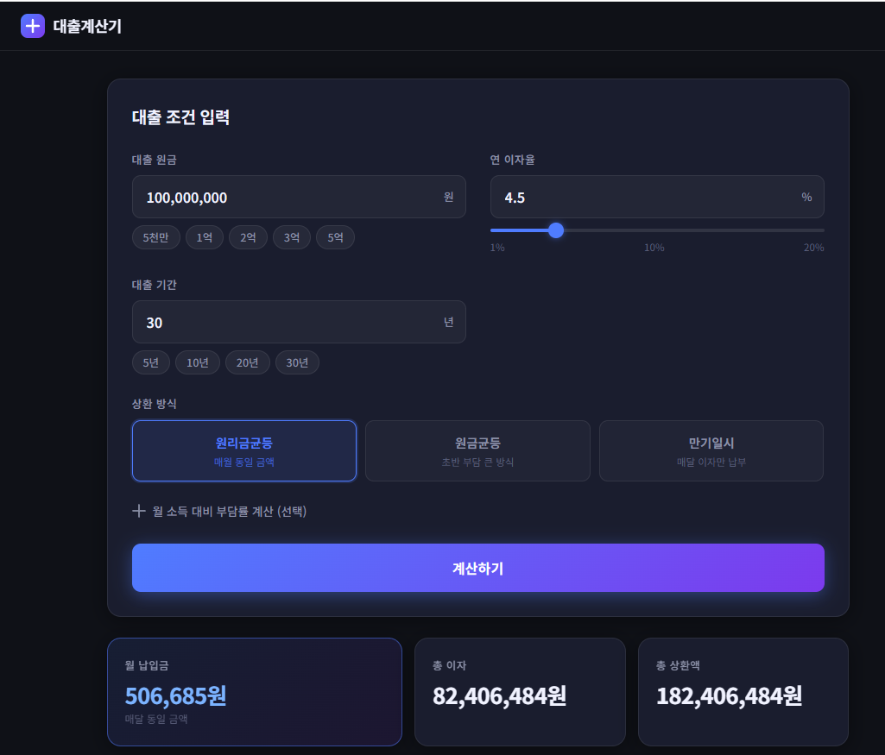
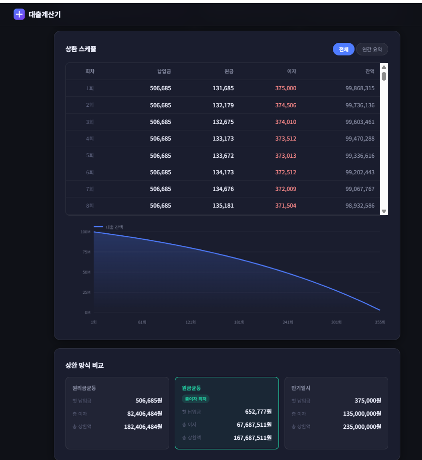
소요: 1분
v1을 대화로 계속 수정
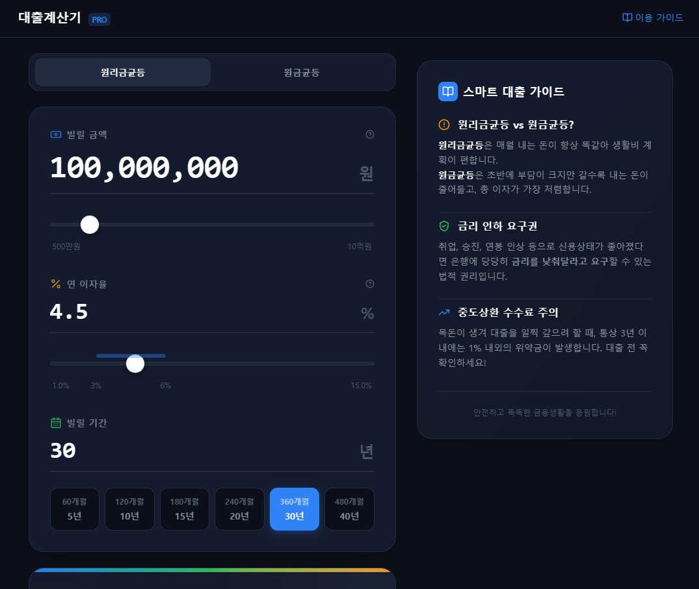
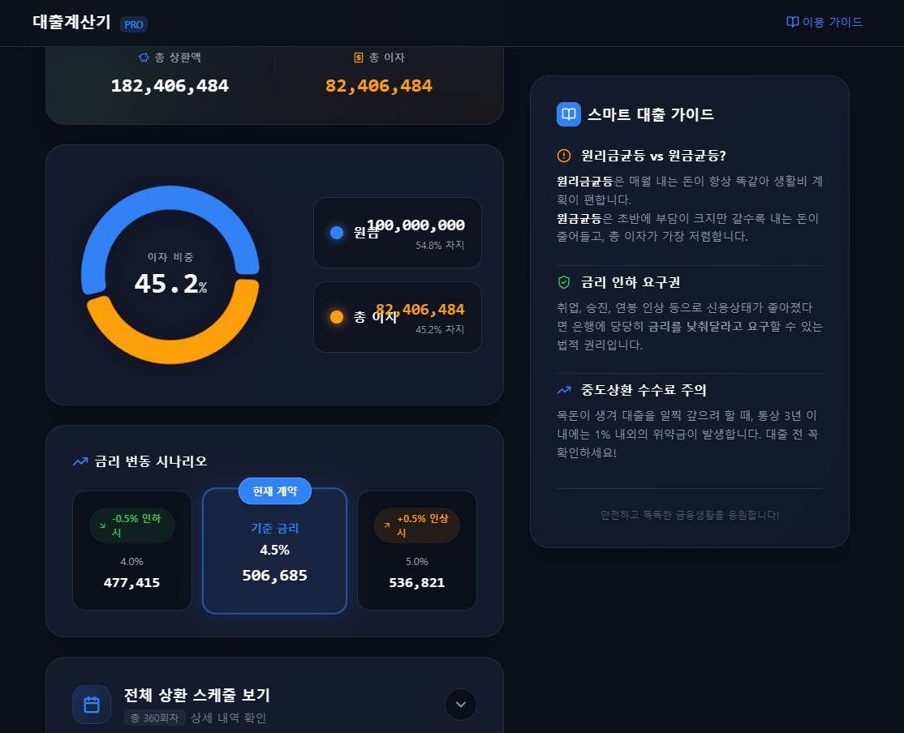
디자인은 훨씬 좋아짐
하지만 바뀐 건 겉모습뿐
소요: 1시간
기준서 복붙 한 번에 완성
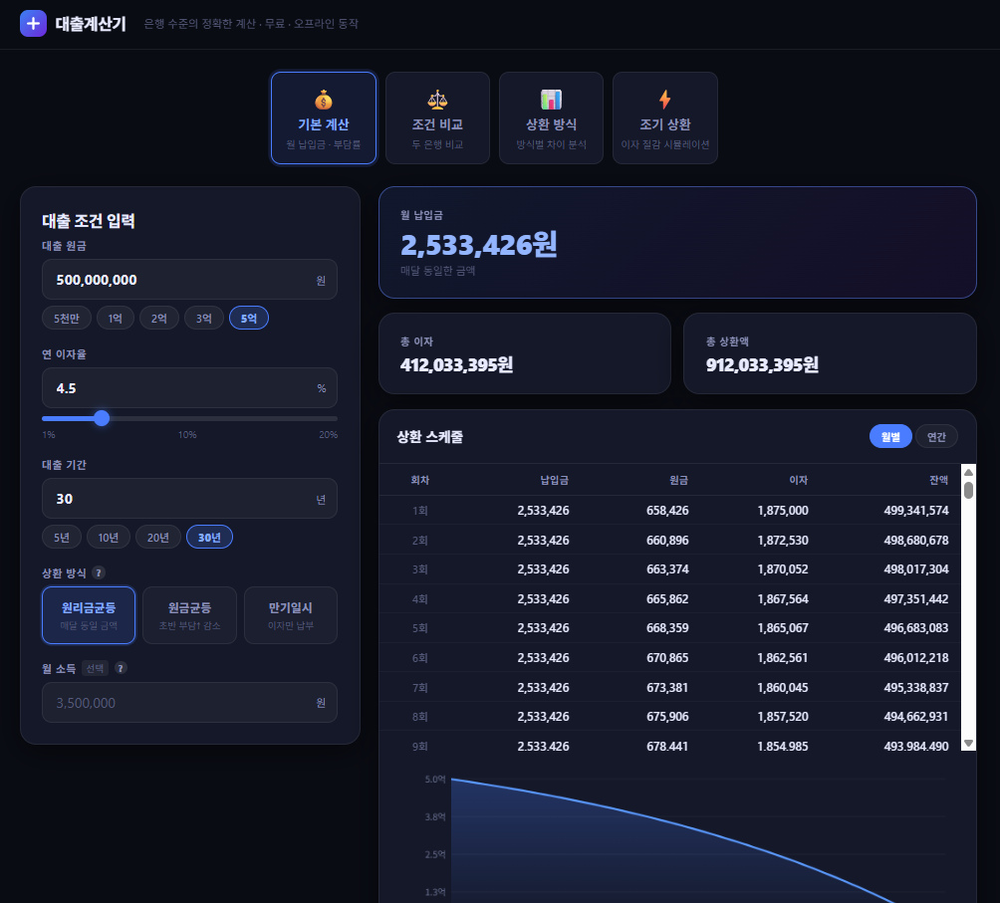
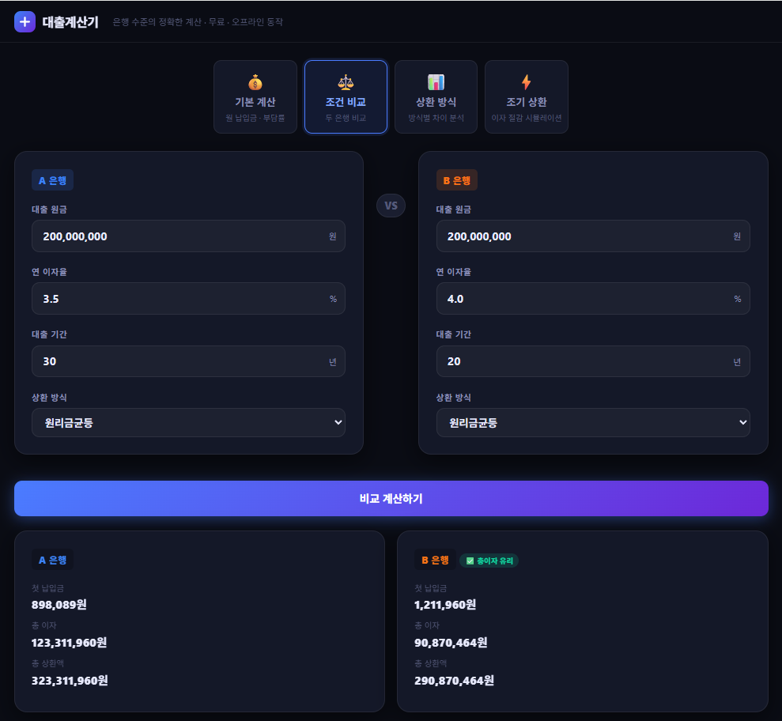
소요: 3분
| 비교 | "만들어줘" | 1시간 대화 | 기준서 한 장 |
|---|---|---|---|
| 소요 시간 | 1분 | 1시간 | 3분 |
| 디자인 | 기본 | 좋음 | 좋음 |
| 계산 정확도 | 미검증 | 미검증 | 은행 기준 |
| 기능 수 | 3개 | 6개 | 15개+ |
| 핵심 차이 | 대화 = 디자인만 개선 | 기준 = 내용이 다름 | |
Google이 만든 무료 AI 코딩 도구 (데스크탑 앱). 다운로드: antigravity.google
Antigravity 실행 → Open Folder 클릭 (또는 Ctrl+K+O)
작업할 빈 폴더를 선택하세요.
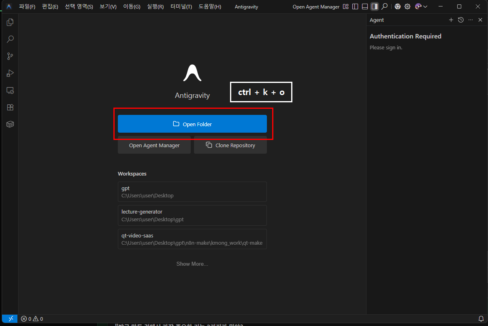
왼쪽 = 파일 목록 (건드릴 필요 없음)
가운데 = 문서 및 코드 확인 창
오른쪽 = AI 대화창 (여기에 말하면 됩니다)
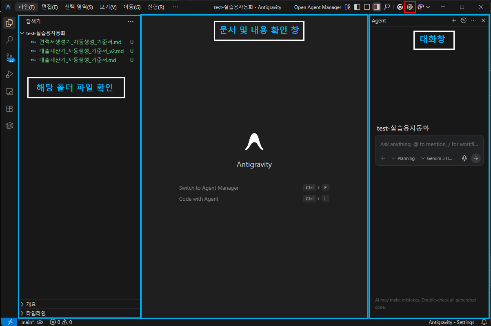
상단 톱니바퀴 아이콘 → Open Antigravity User Settings (Ctrl+,)
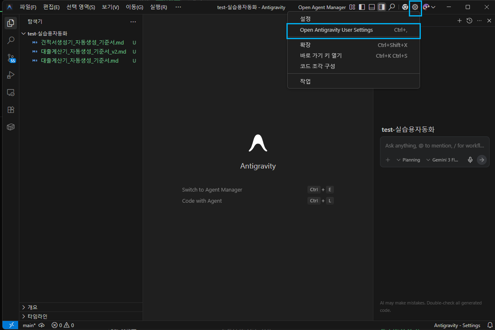
같은 설정 화면(Ctrl+,)에서:
Terminal Command Auto Execution → Always Proceed 선택
AI가 터미널 명령을 실행할 때 확인 없이 자동 진행됩니다.
이거 안 하면 팝업을 수십 번 눌러야 합니다.
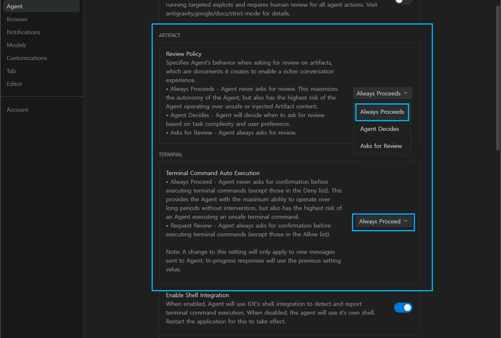
같은 설정 화면에서 아래로 스크롤:
- Agent Gitignore Access → 켜기
- Agent Non-Workspace File Access → 켜기
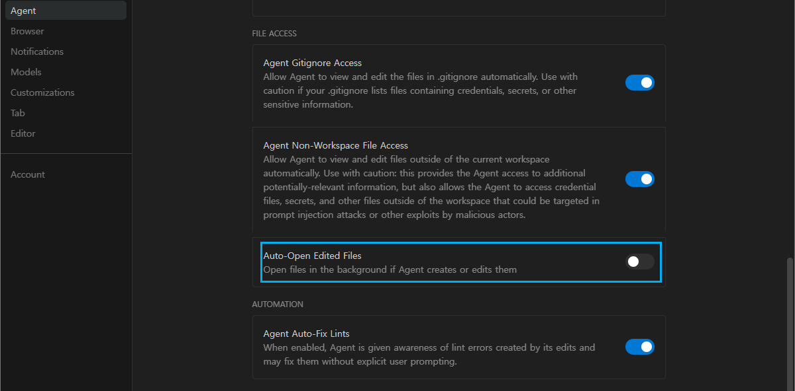
5단계까지 완료한 사람은 손 들어주세요.
안 되는 사람은 옆 사람이 도와주기 / 강사 화면 같이 보기.
각자 원하는 걸 AI한테 시켜보세요. 제한 없습니다.
예시: "대출이자 계산기 만들어줘", "견적서 자동 생성기 만들어줘", 또는 본인이 평소 만들고 싶던 것.
Allow, Trust, 허용 — 뭐든 다 누르세요. 정상입니다. (설정 완료했으면 자동)
Preview가 뜬 사람: 결과를 살펴보세요. 디자인은? 기능은? 디테일은?
이따가 비교할 거니까 기억해두세요.
"뭔가 나오긴 했는데..." 어떤 부분이 아쉬운지 생각해보세요.
작동 중 (기다리세요)
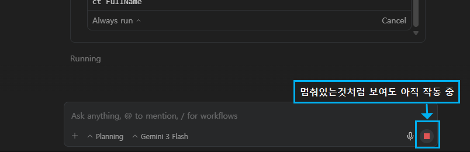
빨간 정지 버튼 = 아직 작업 중. 멈춘 것처럼 보여도 기다리세요.
끝남 (입력 가능)
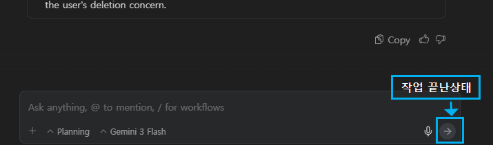
파란 화살표 버튼 = 작업 완료. 다음 명령을 입력할 수 있습니다.
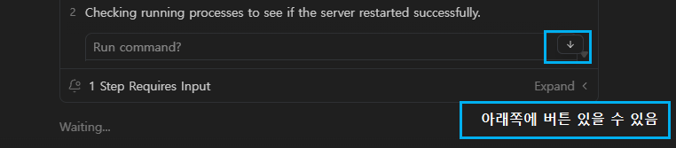
아래쪽에 버튼이 숨어있을 수 있음. 스크롤하세요.
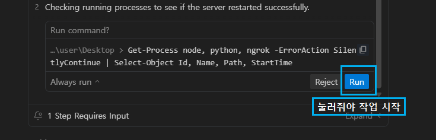
Run 버튼을 눌러야 작업이 시작됩니다.
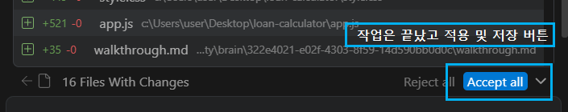
작업 끝나면 Accept all로 파일 저장.
주제가 없는 분은 아래 중 하나를 복붙하세요:
아까 "만들어줘" 한마디로 만든 것 vs 기준서를 넣고 만든 것. 차이를 체감합니다.
아까 것과 비교해야 하니까 새 폴더를 만드세요. Open Folder → 빈 폴더 선택
아래에서 기준서 다운 → 열어서 내용 전체 복사 → AI 채팅에 통째로 붙여넣기 → Enter
AI가 설계 문서 3개를 먼저 만들고, 그 다음에 구현합니다. 중간에 끼어들지 마세요.
Preview에 결과가 나타나면 확인.
아까 만든 것 vs 지금 만든 것. 디자인, 기능, 디테일 차이를 확인하세요.
기준서 다운로드
| 증상 | 해결법 |
|---|---|
| Allow/Trust 팝업 | 전부 허용. 정상입니다 |
| 에러 발생 | "에러 메시지를 AI한테 그대로 붙여넣으세요" |
| AI 응답 멈춤 | "계속해줘" 입력 |
| npm 에러 | "npm install 하지 마. 순수 HTML/CSS/JS만 써" 입력 |
대출이자 계산기를 3가지 방법으로 만든 실제 결과입니다.
기능: 기본 계산 + 차트
디자인: AI 기본값
구조: 단일 페이지, 위에서 아래로
UX: 입력 → 결과. 끝.
AI가 아는 대로 빠르게 만듦.
기능은 있지만 깊이가 없음.
기능: 거의 동일
디자인: 약간 나음
구조: 거의 동일
UX: 거의 동일
기능 목록을 줬지만 AI가 이미 아는 것.
차이가 거의 없음.
기능: 시나리오별 탭 분리
디자인: A은행 vs B은행 비교 UI
구조: 사용자 여정 기반 설계
UX: 용어 툴팁, 접근성(aria)
AI가 설계 문서를 먼저 만들고 구현.
구조와 깊이가 다름.
| 비교 | "만들어줘" | 기준서 v1 | 기준서 v2 |
|---|---|---|---|
| AI의 행동 | 바로 코드 | 바로 코드 | 설계 문서 3개 → 코드 |
| 사용자 분석 | 없음 | 없음 | 감정, 여정, 막힘 지점 분석 |
| 디자인 근거 | AI 기본값 | "토스처럼" (모호) | 첫인상/정보구조/초보자 배려 |
| 기능 설계 | AI 판단 | 기능 나열 | 시나리오에서 기능 도출 |
| 빠뜨리는 것 | 많음 | 비슷 | AI가 스스로 빈틈 점검 |
기능 목록을 주는 건 AI가 이미 아는 걸 반복시키는 것.
깊이 있는 질문을 주면 AI가 스스로 더 깊이 생각합니다.
아까 체험한 기준서의 구조입니다. 그대로 따라 쓰면 됩니다.
AI가 삽질하지 않게 제약 조건을 먼저 건다
"npm 금지, 순수 HTML/CSS/JS만, 중간에 묻지 말고 끝까지 실행"
"뭘 만들어라"가 아니라 비교 대상을 준다
"네이버 대출계산기보다 시각적으로, 은행 앱보다 빠르게, 엑셀보다 직관적으로"
"기능 나열"이 아니라 "상황 + 감정 + 진짜 원하는 것"을 적는다
"전세 대출 받으려는데, 월 얼마나 나가는지 모르겠어요. 3억 빌리면 감당이 되나요?"
"A은행 3.5% 30년 vs B은행 4.0% 20년, 뭐가 유리한지 모르겠어요"
"코드 짜기 전에 설계 문서 3개를 먼저 만들어라" — 이 한 줄이 결과를 바꿉니다
다음 슬라이드에서 자세히 설명합니다
측정 가능한 품질 기준을 적는다
"전체 UI 한글", "기본값이 채워져 있어서 바로 결과가 보여야 한다", "모바일 375px"
AI가 하면 안 되는 것을 명시한다
"서버/DB 금지", "로그인 만들지 마", "영어 UI 금지", "외부 API 호출 금지"
AI에게 스스로 점검하라고 시킨다
"시나리오 A~D가 모두 해결되는가?", "초보자가 이 앱을 쓸 수 있는가?"
나머지 5개는 한두 줄이면 됩니다.
시나리오와 AI 실행 규칙이 결과 품질을 결정합니다.
"만들어줘" vs "설계 문서를 먼저 만들고, 그 다음에 만들어라"
기준서에 4번이 없으면
사용자가 기준서를 줌
AI가 바로 코드 작성
기능은 있지만 깊이 없음
기준서에 4번이 있으면
사용자가 기준서를 줌
AI가 설계 문서 3개를 먼저 작성
사용자분석 → 디자인기준 → 기능설계
그 문서를 기반으로 구현
구조와 깊이가 다른 결과
"코드를 짜기 전에, 아래 3개의 설계 문서를 먼저 파일로 작성하라.
각 문서를 충분히 깊게 작성한 후, 그 문서들을 기반으로 구현한다.
문서 작성 없이 바로 코드를 짜는 것을 금지한다."
왜 효과가 있는가? AI에게 "깊이 생각해"라고 말하면 효과 없습니다.
하지만 "파일로 써라"라고 하면, 파일에 쓸 내용이 있어야 하니까 더 구체적으로 분석하게 됩니다.
사용자 심층 분석
감정 상태는? 진짜 원하는 건?
초보자가 막힐 지점은?
디자인 기준
첫 3초의 인상은?
숫자가 많을 때 어떻게?
기능 + 기술 설계
시나리오에서 기능 도출
AI가 흔히 놓치는 것들
만든 것 화면을 돌려가며 보여주기.
"기준서 없이 vs 있을 때 가장 큰 차이가 뭐였나요?"
개인정보 넣지 마세요.
API 키 직접 입력 금지.
공개 URL이면 민감정보 확인.
가져가시는 자료
기준서 예시를 열어서 구조를 보세요. 주제만 바꾸면 그대로 쓸 수 있습니다.
AI한테 "만들어줘"는 누구나 합니다.
기준서 한 장이 결과의 깊이를 바꿉니다.
핵심은 시나리오와 "문서를 먼저 만들어라"는 한 줄.
1주차 연결: "1주차에 이야기한 '규칙 파일로 AI를 관리한다'는 것, 오늘 체험한 '기준서'가 그 시작입니다."